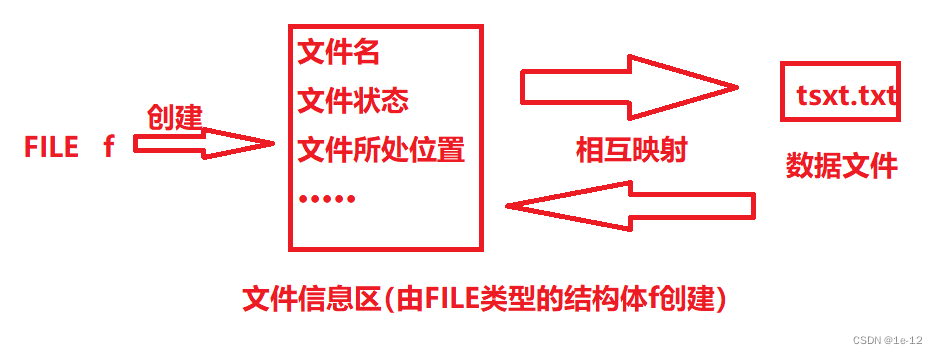

#include <stdio.h>
int main()
{
int X, Y;
scanf_s("%d %d", &X, &Y);
int a = X, b = Y;
if (X < Y)//先调整大小，使X为两数中较大者，Y为较小者
{
int t = X;
X = Y;
Y = t;
}
int r = X % Y;//求得余数
while (r != 0)
{
X = Y;
Y = r; //不断调整相除的值
r = X % Y;
}//当r不为0，退出循环，得到Y为最大公约数
printf("%d\n", Y);//打印最大公约数
return 0;
}
值得注意的是：最小公倍数 = 两数乘积 / 最大公约数
int gcd(int a,int b){
if(b==0) return a;
else return gcd(b,a%b);
}
rand 函数 和 srand 函数
在C语言中比较常用的随机函数是 rand 函数，它可以随机的产生 0 ~ rand_max 的随机数,定义类型不同最大值也不同，rand 函数包含在头文件stdlib.h中。
#include <stdio.h>
#include <stdlib.h>
int main()
{
int a=rand();
printf("%d",a);
return 0;
}
每次产生的随机数都是相同的，因为rand 函数产生的随机数是伪随机数，是根据一个数按照某个公式推算出来的，这个数我们称之为“种子”，但是这个种子在系统启动之后就是一个定值。
要想每次产生的随机数不一样，那么，我们就要用到 srand 函数。
rand（）产生随机数时，如果用srand（seed）播下种子之后，一旦种子相同，产生的随机数将是相同的。当然很多时候刻意让rand（）产生的随机数随机化，用时间作种子 srand（time（NULL）），这样每次运行程序的时间肯定是不相同的，产生的随机数肯定就不一样了。
srand((unsigned)time(NULL));
srand(time(0));
srand(time(NULL)) //用时间作种子
我们常常使用系统时间来初始化，使用time函数来获取系统时间，得到的值是一个时间戳，即从1970年1月1日0点到现在时间的秒数，然后将得到的time_t类型数据转化为(unsigned int)的数，然后再传给srand函数,用法如下：
srand((unsigned int)time(NULL))或srand(time(0));
产生随机数范围：[m,n]
int a=m+rand()%(n-m+1);
完整过程:
#include <stdio.h>
#include <stdlib.h>
#include <time.h>
int main(){
int x,y,m,n;
srand(time(NULL));
x=rand()%100+1; // 1~100随机数
y=rand()%(n-m+1)+m; // m~n随机数
printf("%d\n%d",x,y);
return 0;
}
存放在磁盘上的文件就是文件
但是在程序设计中我们一般将文件分为两类：程序文件和数据文件（按文件的功能分类）。
1.程序文件
包括源程序文件（后缀为.c），目标文件（Windows环境后缀为.obj），可执行文件（Windows环境后缀为.exe）。
2.数据文件
文件的内容不一定是程序，而是程序运行时读写的数据，比如程序运行需要从中读取数据的文件，或者输出内容的文件。
在没有文件操作的C语言终端程序中，数据的输入和输出都是以终端为对象的，即从终端的键盘输入数据，运行结果在屏幕上显示。但是在有文件操作的程序中，我们可以将终端的键盘输入的数据保存在磁盘中，或者将磁盘中的文件数据都取到程序内存中使用。
一个文件需要有唯一的文件标识，以便用户的识别和引用。
为了方便起见文件标识常被称为文件名。
文件名包含三个部分：文件路径+文件名主干+文件后缀
例如：D:\study\编程\C语言\学习\文件操作\test.c
\之前的内容都是表示文件所在的路径，比如此test.c文件在D盘的study目录下的：编程目录下的：C语言目录下的：学习目录下的：文件操作目录下的位置。
此文件的文件名主干是test
此文件的文件名后缀是c
在我们读写文件时需要先建立一个文件信息区来记录所要使用文件的各种数据（如文件的名字、文件状态及文件所在的当前位置等），而在C语言中记录这些状态的类型为文件指针：
缓冲文件系统中，关键的概念是"“文件类型指针"，简称“文件指针"。
每个被使用的文件都在内存中开辟了一个相应的文件信息区，用来存放文件的相关信息(如文件的名字，文件状态及文件当前的位置等)。这些信息是保存在一个结构体变量中的。该结构体类型是有系统声明的，取名FILE。
下图可以很直观的理解FILE类型的结构体和文件读取时的关系：

在VS2013中结构体FILE是被这样定义的：
struct _iobuf {
char* ptr;
int _cnt;
char* _base;
int _flag;
int _file;
int _charbuf;
int _bufsiz;
char* _tmpfname;
};
typedef struct _iobuf FILE;
一般都是通过一个FILE的指针来维护这个FILE结构的变量（通过FILE类型的指针找到文件信息区的起始地址），这样使用起来更加方便。
FILE* pf;//文件指针变量
在弄清楚文件操作的关联原理后，我们来进行文件打开和关闭的实操：
文件在读写之前应该先打开文件，在使用结束之后应该关闭文件。
ANSIC规定使用fopen函数来打开文件，fclose来关闭文件。
在编写程序的时候，在打开文件的同时，fopen函数都会返回一个FILE*的指针变量指向该文件，也相当于建立了指针和文件的关系。
FILE * fopen(const char *filename,const char *mode);
该函数的返回值是一个FILE类型的指针，在文件成功打开后返回此文件信息区的起始地址，打开失败则返回一个NULL（空指针），所以使用fopen时需要一个FILE类型的指针来接收其返回值。
| 文件使用方式 | 含义 | 如果指定文件不存在 |
|---|---|---|
| "r" (只读) | 为了输入数据，打开一个已经存在的文本文件 | 出错 |
| "w" (只写) | 为了输出数据，打开一个文本文件 | 建立一个新的文件 |
| "a" (追加) | 向文本文件尾添加数据 | 建立一个新的文件 |
| "rb" (只读) | 为了输入数据，打开一个二进制文件 | 出错 |
| "wb" (只写) | 为了输出数据，打开一个二进制文件 | 建立一个新的文件 |
| "ab" (追加) | 向一个二进制文件尾添加数据 | 出错 |
| "r+" (读写) | 为了读和写，打开一个文本文件 | 出错 |
| "w+" (读写) | 为了读和写，建一个新的文件 | 建立一个新的文件 |
| "a+" (读写) | 打开一个文件，在文件尾进行读写 | 建立一个新的文件 |
| "rb+" (读写) | 为了读和写打开一个二进制文件 | 出错 |
| "wb+" (读写) | 为了读和写，新建一个新的二进制文件 | 建立一个新的文件 |
| "ab+" (读写) | 打开一个二进制文件，在文件尾进行读和写 | 建立一个新的文件 |
这些模式中的每个字母都有特定的含义：
r 代表读取（read）。w 代表写入（write）。a 代表追加（append）。b 代表二进制模式（binary），用于处理非文本文件。+ 代表更新模式，即同时允许读取和写入。//打开
FILE* pf = fopen("text.txt","w");
//判断是否打开成功
if (pf == NULL)
{
perror("fopen");
return 1;
}
int fclose(FILE stream);
可以看到该fclose函数只有一个FILE类型的参数stream：
stream:传入将要关闭的文件的文件指针。
该函数的返回值是int类型的：如果关闭成功就返回0值，否则返回EOF（-1）值。
int main()
{
//打开
FILE* pf = fopen("text.txt","w");
//判断是否打开成功
if (pf == NULL)
{
perror("fopen");
return 1;
}
//关闭
if (fclose(pf) == EOF)
{
//关闭失败
perror("fclose");
return 1;
}
pf = NULL;
return 0;
}
==在关闭文件之后应该将原来的文件指针置为空(NULL)，避免野指针的产生。
文件打开之后是要进行一系列读写操作的，下面来详细讲解一系列文件的读写操作：
读写文件时我们有两种读取方式：顺序读取和随机读取。
| 功能 | 函数名 | 适用于 |
|---|---|---|
| 字符输入函数 | fgetc | 所有输入流 |
| 字符输出函数 | fputc | 所有输出流 |
| 文本行输入函数 | fgets | 所有输入流 |
| 文本行输出函数 | fputs | 所有输出流 |
| 格式化输入函数 | fscanf | 所有输入流 |
| 格式化输出函数 | fprintf | 所有输出流 |
| 二进制输入 | fread | 文件 |
| 二进制输出 | fwrite | 文件 |
int fputc(int character,FILE *stream);
该函数有int类型的character和FILE*类型的stream两个参数：
当该函数成功运行时返回所存入字符的ASCII码值，否则返回EOF（-1）值。
int main()
{
//打开
FILE* pf = fopen("text.txt", "w");
//判断是否打开成功
if (pf == NULL)
{
perror("fopen");
return 1;
}
//写入数据
int i = 'a';
for (i = 0; i < 26; i++)
{
fputc('a' + i, pf);
}
//关闭
if (fclose(pf) == EOF)
{
//关闭失败
perror("fclose");
return 1;
}
pf = NULL;
return 0;
}
int fgetc(FILE *stream);
该函数有一个FILE*类型的参数stream：
该函数成功读入数据时会返回读取字符的ASCII值，反之则会返回EOF（-1）值。
int main()
{
//打开
FILE* pf = fopen("text.txt", "r");//此时读取文件要用"r"的方式打开
//判断是否打开成功
if (pf == NULL)
{
perror("fopen");
return 1;
}
//读入数据
int i;
while ((i = fgetc(pf)) != EOF)
{
printf("%c ", i);
}
//关闭
if (fclose(pf) == EOF)
{
//关闭失败
perror("fclose");
return 1;
}
pf = NULL;
return 0;
}
注：在程序运行时每次使用fgetc函数读入数据时文件指针在向后移动使其读取的数据不会重复。
int fputc(const char *str,FILE *stream);
向文件输入单个字符数据
该函数有int类型的character和FILE*类型的stream两个参数：
character:接收所要存入的字符的ASCII值
stream:接收指向所要存入文件的指针
当该函数成功运行时返回所存入字符的ASCII码值，否则返回EOF（-1）值。
int fgetc(FILE *stream);
该函数一般被用来读取文件中单个字符数据
该函数成功读入数据时会返回读取字符的ASCII值，反之则会返回EOF（-1）值
int fputs(const char *str,FILE *stream);
直接向文件写入一个字符串
该函数成功运行返回一个非负值，否则返回EOF（-1）值
char *fgets(char *str,int num,FILE *stream);
该函数只能读取一行的数据
str:接收指向储存读出数据的字符串指针
num:接收要复制到 str 中的最大字符数（包括终止空字符）
stream:接收指向所要读取文件的指针
成功后，该函数返回 str的头指针
如果在尝试读取字符时遇到文件结尾，则会设置 eof 指示符 。如果在读取任何字符之前发生这种情况，则返回的指针为空指针（并且 str 的内容保持不变）。
如果发生读取错误，则设置错误指示器 （ferror） 并返回空指针（但 str 所指向的内容可能已更改）。
int fprintf(FILE *stream,const char *format,...);
向文件输出任意数据
该函数成功运行时会返回所输出的字节总数，否则返回一个负数并报错
struct S
{
int age;
char name[20];
char sex[5];
};
int main()
{
struct S L = { 20,"张三","男" };
//打开
FILE* pf = fopen("text.txt", "w");
//判断是否打开成功
if (pf == NULL)
{
perror("fopen");
return 1;
}
//输入数据
fprintf(pf, "%d %s %s", L.age, L.name, L.sex);
//关闭
if (fclose(pf) == EOF)
{
//关闭失败
perror("fclose");
return 1;
}
pf = NULL;
return 0;
}
int fscanf(FILE *stream,const char *format,...);
运行成功后，该函数返回所读取数据的个数（甚至为零），如果在读取时发生读取错误或到达文件末尾，则会设置正确的指示器（feof 或 ferror）。而且，如果在成功读取任何数据之前发生任何一种情况，则返回 EOF。
struct S
{
int age;
char name[20];
char sex[5];
};
int main()
{
struct S s;
//打开
FILE* pf = fopen("text.txt", "r");
//判断是否打开成功
if (pf == NULL)
{
perror("fopen");
return 1;
}
//输出数据
fscanf(pf, "%d %s %s", &(s.age), s.name, s.sex);
printf("%d %s %s", s.age, s.name, s.sex);
//关闭
if (fclose(pf) == EOF)
{
//关闭失败
perror("fclose");
return 1;
}
pf = NULL;
return 0;
}
size_t fwrite(const void *ptr,size_t size,size_t count,FILE *stream);
直接将计算机内存中所存储的二进制数据输出到文件中（此时此文件就是一个二进制文件）
ptr:接收指向所要输入数据的指针或地址
size:接收输出的每个数据的大小（以字节为单位）。
count:所要输出数据的个数
stream:接收指向所要输出文件的指针
成功运行返回输出的数据总数，如果此数字与 count 参数不同，则写入错误会阻止函数完成。在这种情况下，将为流设置误差指示器（ferror），如果大小或计数为零，则该函数返回零，并且错误指示器保持不变。
struct S
{
int age;
char name[20];
char sex[5];
};
int main()
{
struct S L = { 20,"李四","女" };
//打开
FILE* pf = fopen("text.txt", "wb");//二进制输出时用wb
//判断是否打开成功
if (pf == NULL)
{
perror("fopen");
return 1;
}
//输出数据
fwrite(&L, sizeof(struct S), 1, pf);
//关闭
if (fclose(pf) == EOF)
{
//关闭失败
perror("fclose");
return 1;
}
pf = NULL;
return 0;
}
size_t fread(void *ptr,size_t size,size_t count,FILE *stream);
二进制的方式读取
ptr:传入指向将要存储数据的变量的指针或地址
size:传入每次从文件读取数据的大小（以字节为单位）
count:传入将要读取的次数
stream:接收指向所要输入文件的指针
该函数运行成功后返回读取数据的次数，否则返回0值。
struct S
{
int age;
char name[20];
char sex[5];
};
int main()
{
struct S s;
//打开
FILE* pf = fopen("text.txt", "rb");//二进制输出时用rb
//判断是否打开成功
if (pf == NULL)
{
perror("fopen");
return 1;
}
//输入数据
if (fread(&s, sizeof(struct S), 1, pf) != 0)
{
printf("%d %s %s", s.age, s.name, s.sex);
}
//关闭
if (fclose(pf) == EOF)
{
//关闭失败
perror("fclose");
return 1;
}
pf = NULL;
return 0;
}
补充：
对任何一个c程序，只要运行起来，就默认打开3个流:
stdin——标准输入流——键盘
stdout——标准输出流——屏幕
stderr ——标准错误流——屏幕
也就是在C程序运行时，系统自动打开三个FILE*类型的流：stdin（接收键盘数据），stdout（接收所要向屏幕输出的数据），stderr（接收所要向屏幕输出的数据）。
如：
int main()
{
int ch = fgetc(stdin);
fputc(ch, stdout);
return 0;
}
int main()
{
int a;
fscanf(stdin, "%d", &a);
fprintf(stdout, "%d", a);
return 0;
}
fscanf（stdin，···）等价于scanf（···）,fprintf（stdout,···）等价于printf（···）
int sprintf(cahr *str,const char *format,...);
int sscanf(const char *s,const char *format,...);
struct S
{
int age;
char name[20];
float point;
};
int main()
{
struct S l = { 15,"lisi",88.9f };
char arr[20];
struct S j = { 0 };
//将各类型数据转换为字符串
sprintf(arr, "%d %s %.1f", l.age, l.name, l.point);
printf("%s\n", arr);
//将字符串数据转换为各种类型
sscanf(arr, "%d %s %f", &(j.age), j.name, &(j.point));
printf("%d %s %.1f", j.age, j.name, j.point);
return 0;
}
getc函数每读完一次数据时下一次再重新读取时不会从文件开始的位置去读，而是从上一次读取结束的地方再次读取，这实际是FILE*类型的指针的偏移
原型:
size_t strlen(const char *str);
e.g. strlen(str)
注意：
区分字符串长度strlen()与字符串变量长度sizeof()。
char s[50] = "hello";
printf("%d\n", strlen(s)); // 5
printf("%d\n", sizeof(s)); // 50
原型:
char *strcpy(char dest[], const char source[]);
原型:
char* strncpy(char *dest, char *src, **size_t n)**;
strcmp(str1,str2)
str1 > str2 值为1
str1 < str2 值为-1
str1 = str2 值为0
返回值同strcmp()
原型:
char* strcat(char *s1, const char *s2);
注意：
要确保两字符串长度之和小于源字符串的容量长度，否则可能会导致缓冲区溢出。
e.g. strcat(str1,str2);
e.g. strnset(str,'x',n);
时间复杂度O(mn)
#include<stdio.h>
#include<assert.h>
#include<string.h>
int BF(char* str, char* sub)//str代表主串，sub代表子串
{
assert(str&&sub);//断言
if (str == NULL || sub == NULL)//串为空值时直接返回-1
{
return -1;
}
int i = 0;//遍历主串
int j = 0;//遍历子串
int lenstr = strlen(str);//求出主串的长度
int lensub = strlen(sub);//求出子串的长度
while ((i < lenstr) && (j < lensub))//当子串遍历结束或主串遍历结束时，跳出循环
{
if (str[i] == sub[j])//匹配成功
{
i++;
j++;
}
else//匹配失败
{
i = i - j + 1;
j = 0;
}
}
if (j >= lensub)//如果是因为子串遍历结束而跳出循环，说明匹配成功，返回下标
{
return i - j;
}
else//匹配失败，返回-1
return -1;
}
int main()
{
printf("%d\n", BF("ababcabcdabcde", "abcd"));//匹配成功，预期返回下标5
printf("%d\n", BF("ababcabcdabcde", "abcds"));//匹配失败，返回-1
printf("%d\n", BF("ababcabcdabcde", "ab"));//匹配成功，返回下标0
return 0;
}
#include <stdio.h>
int BF(char* str, char* sub) {
if (!str || !sub || *sub == '\0') return -1;
for (int i = 0, j = 0; str[i]; i -= j - 1, j = 0) {
while (str[i + j] && sub[j] && str[i + j] == sub[j]) j++;
if (!sub[j]) return i;
}
return -1;
}
int main() {
printf("%d\n", BF("ababcabcdabcde", "abcd")); // 预期返回下标5
printf("%d\n", BF("ababcabcdabcde", "abcds")); // 返回-1
printf("%d\n", BF("ababcabcdabcde", "ab")); // 返回下标0
return 0;
}
#include <stdio.h>
int BF(char *s, char *t, int start) {
if (start < 0 || t[0] == '\0') return -1;
int i, j;
for (i = start, j = 0; s[i] && t[j];) {
if (s[i] == t[j]) {
i++;
j++;
} else {
i = i - j + 1;
j = 0;
}
if (!t[j]) // 子串遍历结束，匹配成功
return i - j;
if (!s[i]) // 主串遍历结束，匹配失败
break;
}
return -1;
}
int main() {
printf("%d\n", BF("ababcabcdabcde", "abcd", 1)); // 预期返回下标5
printf("%d\n", BF("ababcabcdabcde", "abcds", 1)); // 返回-1
printf("%d\n", BF("ababcabcdabcde", "ab", 0)); // 返回下标0
return 0;
}
BF算法缺点：有大量匹配无效，效率低。
KMP算法是一种改进的字符串匹配算法，由D.E.Knuth，J.H.Morris和V.R.Pratt同时发现，因此人们称它为克努特--莫里斯--普拉特操作(简称KMP算法)。KMP算法的关键是利用匹配失败后的信息，尽量减少模式串与主串的匹配次数以达到快速匹配的目的。具体实现就是实现一个next()函数，函数本身包含了模式串的局部匹配信息。时间复杂度O(m+n)。
void GetNext(char* sub, int* next, int lensub)/*sub代表子串；next是外部开辟的动态内存数组；lensub是子串长度*/
{
next[0] = -1;
next[1] = 0;
int i = 2;//当前i下标
int k = 0;//前一项的k
while(i < lensub)
{
if (k == -1 || sub[i - 1] == sub[k])//k回退到-1或前一项sub[i-1]==sub[k]
{
next[i] = k + 1;
i++;
k++;
}
else
{
k = next[k];//if条件不满足时则需将k回退到-1下标
}
}
}
声明： 类型 数组名[行数][列数]
可以把a[0],a[1],a[2]看做3个一维数组的名字，且是3个行元素，即a[0],a[1],a[2]是一维数组名，这一点对于后面二维数组元素的引用很重要
1.完全初始化
int arr1[2][3] = {1,2,3,
4,5,6};
int arr2[2][3] = { {1,2,3},
{4,5,6} };
2.不完全初始化
其它成员默认 0
int arr3[2][3] = { 1,2, };
int arr4[2][3] = { {1, },
{4,5 } };
需要注意的是二维数组在初始化成员个数时列数不能省略，但是会根据列数自动决定行数。
*(a+i) = a[i] = 第 i 个元素的值
一维数组名 代表的是 一维数组首元素的地址。
1.a[0]代表一维数组a[0]中第0列的地址，即&a[0][0]。 （这里一定要反复琢磨是指向列的）
同理，a[1]的值是(第一行)第0列的地址，即&a[1][0]。
2.a[i]+j 就是 a[i][j]的地址。注意：是地址，而不是元素的值
3.& 取地址运算符， * 指针运算符（或称“间接访问运算符”），如 *p代表p指向的对象。
得到地址取值的方法就是加一个“ * ”。
因此， *(a[i]+j) 或者 ((a+i)+j)是a[i][j]的值，或说 *(a[i]+j) = ((a+i)+j) = a[i][j] 。
指向数组的指针变量，就是 数组指针
定义方式例如： int (*p)[4];
#include<stdio.h>
int main(){
int a[3][4] = {{1,3,5,7},{9,11,13,15},{17,19,21,23}};
int (*p)[4] = a;
printf("数组指针引用方式1：%d\n",p[1][1]);
printf("数组指针引用方式2：%d\n",*(*(p+1)+1));
return 0;
}
一个数组，若其元素均为指针类型数据，则成为 指针数组
也就是说，指针数组中的每一个元素都是存放一个地址。
定义样例： int *p[3];
注意：这里就不用()了，[ ]优先级比 * 高。因此p先与[3]结合为p[3] ，表示是一个数组。
#include<stdio.h>
int main(){
int a[3][4] = {{1,3,5,7},{9,11,13,15},{17,19,21,23}};
int *p[3];
p[0] = a[0], p[1] = a[1], p[2] = a[2];
printf("%d\n",p[0]); //错误写法
printf("%d\n",*(p[0])); //正确写法
return 0;
}
在实际的编程中，往往会发生这种情况，即所需的内存空间取决于实际输入的数据，而无法预先确定 。为了解决上述问题，Ｃ语言提供了一些内存管理函数，这些内存管理函数可以按需要动态的分配内存空间，也可把不再使用的空间回收再次利用。
动态分配内存就是在堆区开辟空间。
静态分配
1、 在程序编译或运行过程中，按事先规定大小分配内存空间的分配方式。int a [10]
2、 必须事先知道所需空间的大小。
3、 分配在栈区或全局变量区，一般以数组的形式。
4、 按计划分配。
动态分配
1、在程序运行过程中，根据需要大小自由分配所需空间。
2、按需分配。
3、分配在堆区，一般使用特定的函数进行分配。
#include <stdlib.h>
void *malloc(unsigned int size);
功能：在堆区开辟指定长度的空间，并且空间是连续的
参数：
size：要开辟的空间的大小
返回值：
==成功：开辟好的空间的首地址==
失败：NULL
注意：
1、在调用malloc之后，一定要判断一下，是否申请内存成功。
2、如果多次malloc申请的内存，第1次和第2次申请的内存不一定是连续的。
3、使用malloc开辟空间需要保存开辟好的空间的首地址，但是由于不确定空间用于做什么，所以本身返回值类型为void *，所以在调用函数时根据接收者的类型对其进行强制类型转换。
#include <stdio.h>
#include <stdlib.h>
char *fun()
{
//char ch[100] = "hello world";
//静态全局区的空间只要开辟好，除非程序结束，否则不会释放，所以
//如果是临时使用，不建议使用静态全局区的空间
//static char ch[100] = "hello world";
//堆区开辟空间，手动申请手动释放，更加灵活
//使用malloc函数的时候一般要进行强转
char *str = (char *)malloc(100 * sizeof(char));
str[0] = 'h';
str[1] = 'e';
str[2] = 'l';
str[3] = 'l';
str[4] = 'o';
str[5] = '\0';
return str;
}
int main(int argc, char *argv[])
{
char *p;
p = fun();
printf("p = %s\n", p);
//使用free函数释放空间
free(p);
//防止野指针
p = NULL;
return 0;
}
#include <stdlib.h>
void free(void *ptr)
功能：释放堆区的空间
参数：
ptr：开辟后使用完毕的堆区的空间的首地址
返回值：
无
注意：
free函数只能释放堆区的空间，其他区域的空间无法使用free
free释放空间必须释放malloc或者calloc或者realloc的返回值对应的空间，不能说只释放一部分
free(p); 注意当free后，因为没有给p赋值，所以p还是指向原先动态申请的内存。但是内存已经不能再用了，p变成野指针了，所以一般为了放置野指针，会free完毕之后对p赋 为NULL。
一块动态申请的内存只能free一次，不能多次free。
//使用free函数释放空间
ferr(p);
//防止野指针
p=NULL;
#include <stdlib.h>
void * calloc(size_t nmemb,size_t size);
功能：在堆区申请指定大小的空间
参数：
nmemb：要申请的空间的块数
size：每块的字节数
返回值：
成功：申请空间的首地址
失败：NULL
注意：
malloc和calloc函数都是用来申请内存的。
区别：
函数的名字不一样
参数的个数不一样
malloc申请的内存，内存中存放的内容是随机的，不确定的， 而calloc函数申请的内存中的内容为0
例如：
char *p=(char *)calloc(3,100);
在堆中申请了3块，每块大小为100个字节，即300个字节连续的区域。
#include <stdlib.h>
void* realloc(void *s,unsigned int newsize);
功能：在原本申请好的堆区空间的基础上重新申请内存，新的空间大小为函数的第二个参数
如果原本申请好的空间的后面不足以增加指定的大小，系统会重新找一个足够大的位
置开辟指定的空间，然后将原本空间中的数据拷贝过来，然后释放原本的空间
如果newsize比原先的内存小，则会释放原先内存的后面的存储空间，
只留前面的newsize个字节
参数：
s：原本开辟好的空间的首地址
newsize：重新开辟的空间的大小
返回值：
新的空间的首地址
增加空间：
char *p;
p=(char *)malloc(100)
//想在100个字节后面追加50个字节
p=(char *)realloc(p,150);//p指向的内存的新的大小为150个字节
减少空间：
char *p;
2 p=(char *)malloc(100) 3
//想重新申请内存,新的大小为50个字节
p=(char *)realloc(p,50);//p指向的内存的新的大小为50个字节,100个字节的后50个字
节的存储空间就被释放了
注意:malloc calloc relloc 动态申请的内存，只有在free或程序结束的时候才释放。
内存泄露的概念：
申请的内存，首地址丢了，找不了，再也没法使用了，也没法释放了，这块内存就被泄露了。
内存泄漏案例
int main()
{
char *p;
p=(char *)malloc(100);
//接下来，可以用p指向的内存了
p="hello world";//p指向别的地方了，保存字符串常量的首地址
//从此以后，再也找不到你申请的100个字节了。则动态申请的100个字节就被泄露了
return 0;
}
void fun()
{
char *p;
p=(char *)malloc(100);
//接下来，可以用p指向的内存了
...
}
int main()
{
//每调用一次fun泄露100个字节
fun();
fun();
return 0;
}
解决方式
void fun()
{
char *p;
p=(char *)malloc(100);
//接下来，可以用p指向的内存了
...
free(p);
}
int main()
{
fun();
fun();
return 0;
}
char * fun()
{
char *p;
p=(char *)malloc(100);
//接下来，可以用p指向的内存了
...
return p;
}
int main()
{
char *q;
q=fun();
//可以通过q使用 ，动态申请的100个字节的内存了
//记得释放
free(q);
//防止野指针
q = NULL;
return 0;
}
总结：申请的内存，一定不要把首地址给丢了，在不用的时候一定要释放内存。